| 日付 | 2019年8月9日（金） - 2019年8月12日（月） | ||||
|---|---|---|---|---|---|
| 山域 | 草津周辺 | ||||
| メンバー | 家族（妻、長女・8歳、長男・6歳） | ||||
| 山行形態 | 子連れ3泊4日キャンプ | ||||
| アクセス | 車、リフト、バス | ||||
| ルート |
|
3日目
6時半に起床。本日は靄が出ている。
背後に見えているのは一昨日に登った笠ヶ岳だ。
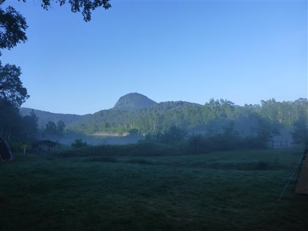
本日もきれいに晴れ渡っている。靄に包まれた朝方の風景は非常に美しい。
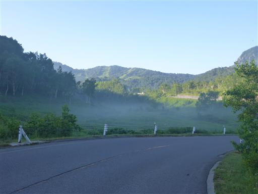
トイレに寄ったついでに木戸池を見学。湖面は静かだ。
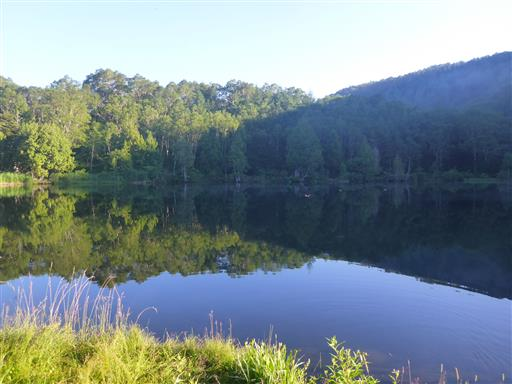
水場で顔を洗う。下に泡が溜まっているが、水はそのまま垂れ流しなのだろうか？
環境を考えるとあまり良くないと思うが…。夜間になっても電気は付かないし、
トイレもセンサーで電気は付くのだがちょうど20秒で切れるので途中で必ず真っ暗になるし、
有料のキャンプ場なのだから、もう少しきちんと整備してほしいところだ。
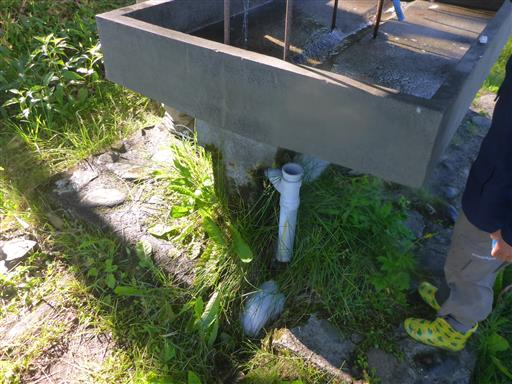
息子は朝から熱心にバッタ捕り。トンボは飽きてバッタに移行した。
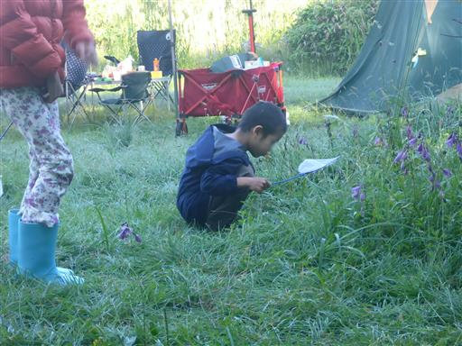
朝食をとったら、横手山ドライブインに移動。
8:20に着いたが、そこそこ車が停まっている。
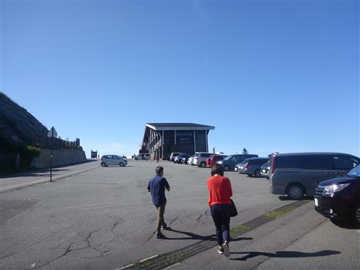
ここからは絶景が広がる。
目の前に見える尖った山は志賀高原のシンボル・笠ヶ岳だ。
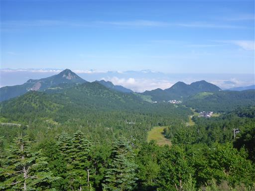
背後には北アルプスの山々がずらっと並んでいる。
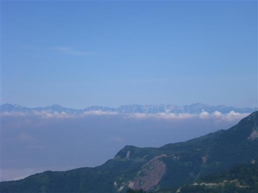
こちらは妙高方面。
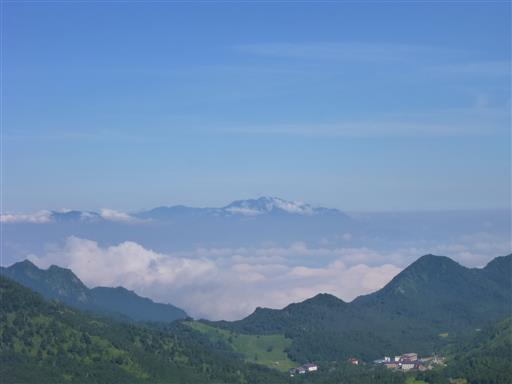
本日は横手山に行く予定。横手山へはスカイレーターという珍しい乗り物に乗って行く。
8:45から営業開始で少々列ができている。
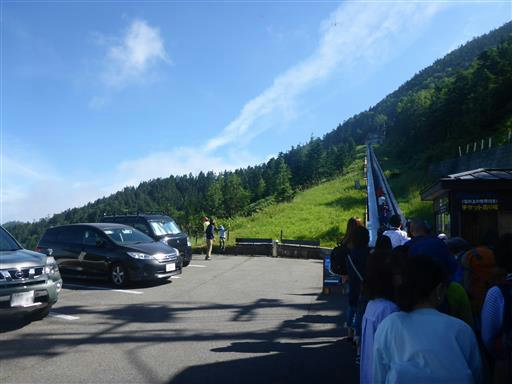
スカイレーター。エスカレーターというより斜めの動く歩道のような乗り物だ。
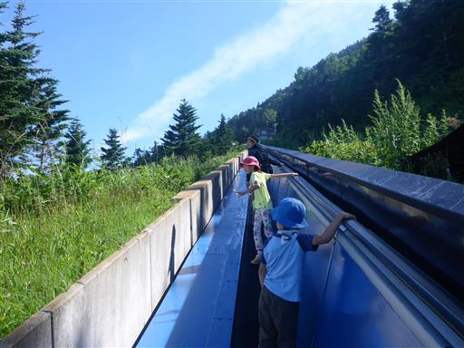
もちろんスカイレーターからの景色は素晴らしい。
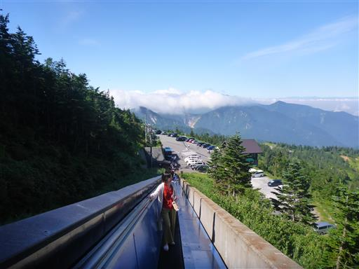
スカイレーターを下りるとリフトに乗り換える。
息子は一昨日にリフトを見かけたときから乗りたいと言っていたため、
大喜びでダッシュしている。
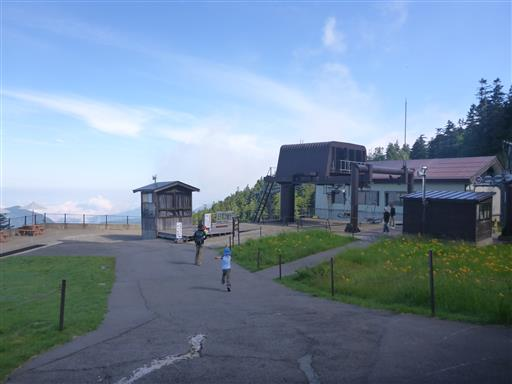
この辺りはニッコウキスゲが咲いている。
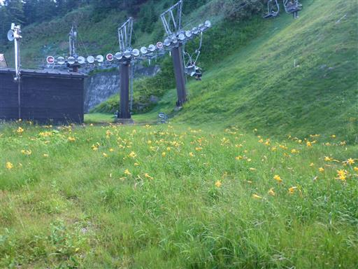
念願のリフトに乗る。スキーなどで頻繁に乗っていると思うのだが、
なぜこんなにハイテンションなのだろう？
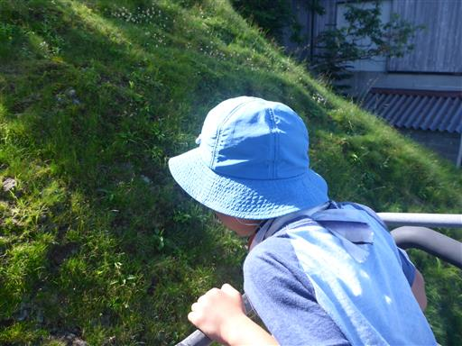
ぐんぐん標高を上げていく。眼下にはうねうねと蛇行する道路が見える。

リフト降り場に到着。ここが横手山山頂だ。
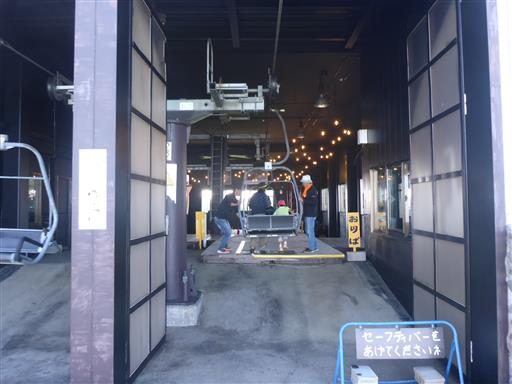
山頂はだだっ広くて雑然としていて、どこに向かえば良いかよく分からない。
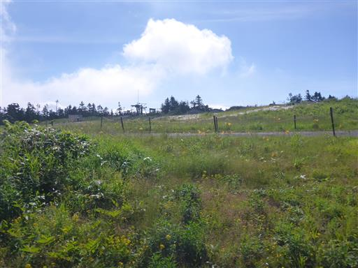
まずはビューテラスに行ってみる。
ここからは素晴らしい展望が広がるが、すぐ下に見えるリフトが無粋だ。
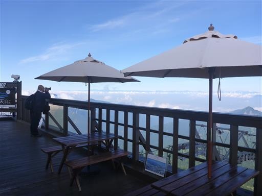
ビューテラスの建物をぐるっと回って、少し分かりにくいところにあるベンチに移動する。
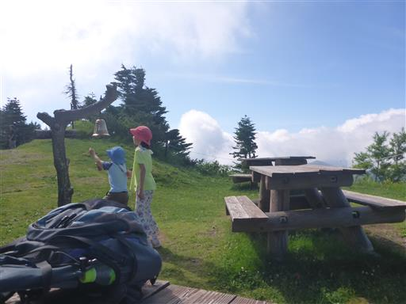
ここからも北アルプスを始め、素晴らしい展望が広がる。
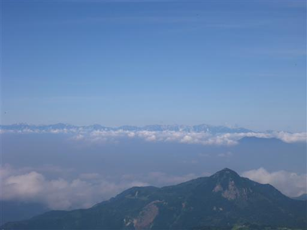
トンボの数が非常に多い。ロープに何匹も止まっていて、捕まえ放題だ。
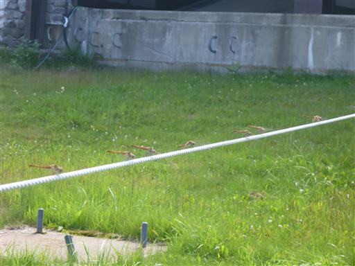
おやつを食べていると、雲がやって来て景色を半分隠してしまう。
決して快晴ではない本日の予報、雲が上がってくるのが早い。
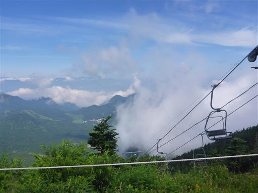
山頂に他に何があるか、ぐるっと一回りする。
日本一高所にあると言われるパン屋が入っている建物はすでに列ができている。
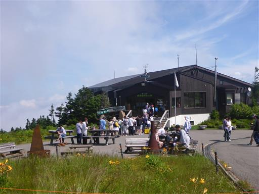
山頂に建つ電波塔。車も停まっており少々無粋だ。
歩いて登って来ているわけではないので、文句を言う資格は無いが…
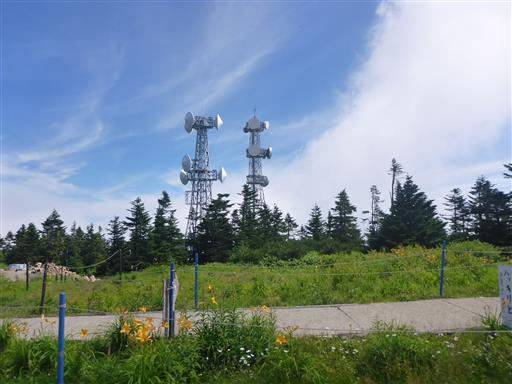
山頂広場の一角に山頂標識を発見。
標高は2307mで志賀高原では第二の高峰だ。
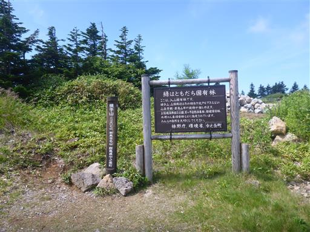
その奥に横手山神社に続く道がある。
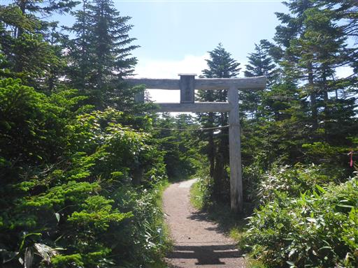
針葉樹林帯に囲まれた道。本来の横手山の姿だ。
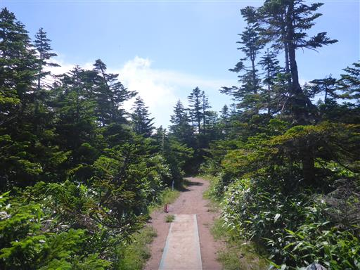
しばらく歩くと山頂標識と三角点と小さな祠が現れる。

ここからも展望が広がるが、草津方面からは巨大な雲が押し寄せている。
晴れていれば富士山まで見えるらしい。
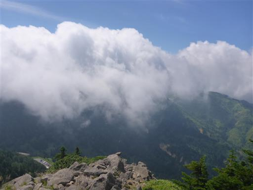
下山は別のリフトを使って渋峠へ。
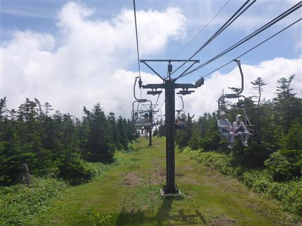
足元には二種類の黄色い花が咲き乱れている。
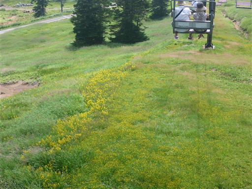
渋峠に到着。ここから横手山ドライブインまでは無料のシャトルバスで移動する。
ちょうどバスが出たばかりだったが、臨時便に乗ることができた。
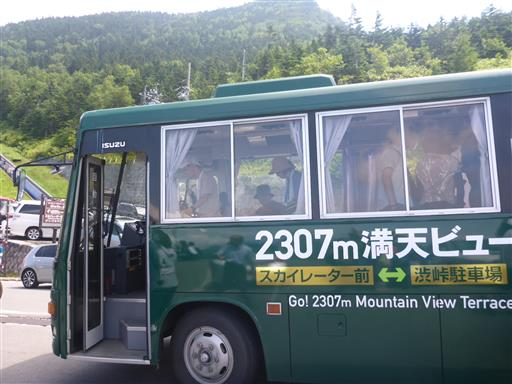
横手山観光を終えたら草津の町まで下りて、昼食屋を探す。
しかし、道路も駐車場も大混雑で全く思い通りに行動できない。
なので、温泉と昼食を兼ねて大滝乃湯に行くことにする。
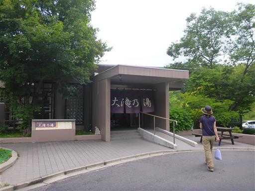
草津温泉は日本有数の名の知られた温泉。いい湯だった。
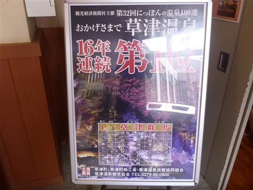
温泉の後は草津観光。山の中腹にあるこの町は結構坂道が多い。
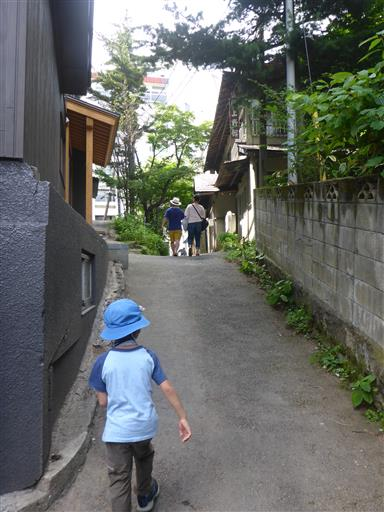
湯畑に到着。湧き出た大量の湯が流れ落ちている。
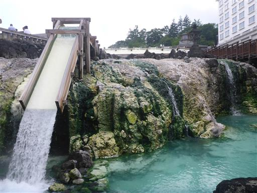
この湯桶は湧き出た湯を冷ますためにあり、この後各温泉施設に運ばれていく。
周囲は温泉街の風景が広がる。こういう雰囲気の場所に来るのは久々だ。
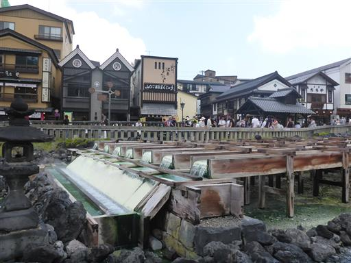
湯がこんこんと湧き出している。草津温泉の湧出量は日本一らしい。
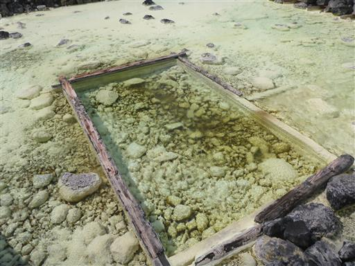
観光を終えたら嫗仙の滝に行こうと考えていたが、時間が押しているのでパス。
草津白根を越える道路は17時に閉鎖されるため、リスクは取れない。
スーパーに行って本日の買い出しを行う。

本日はカレーの予定だが、スーパー大津に牛肉がなかったため、
すぐそばのスーパーもくべえまでひとっ走り。
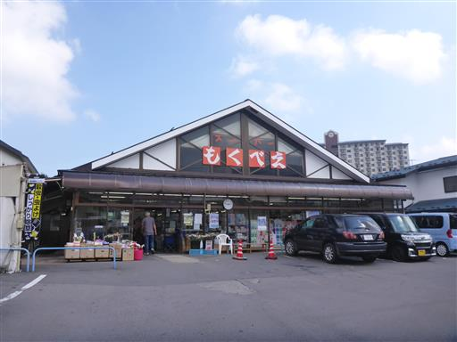
キャンプ場に戻って来る。木戸池でコイの餌やりをして遊ぶ。

餌に群がるコイ。ものすごい奪い合いだ。
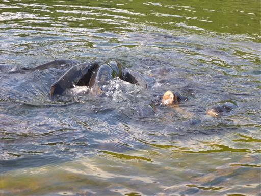
餌くれー。指で釣れそうだ…
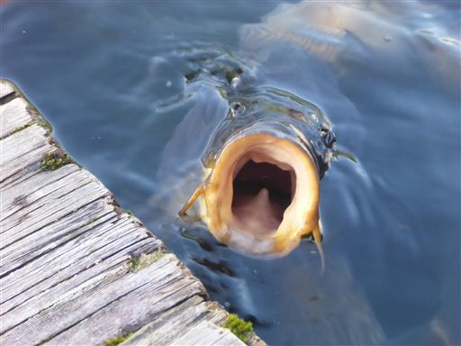
コイで遊んだ後は木戸池を一周する。
池の周りは木道が整備されている。
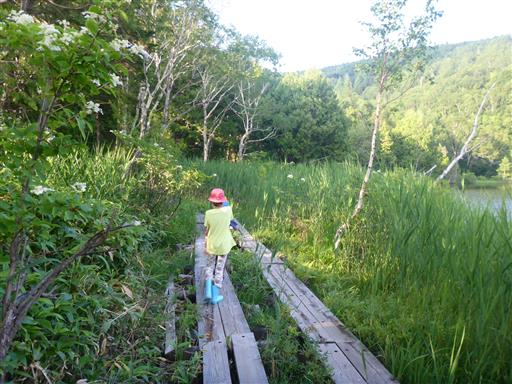
木戸池の反対側までやって来る。
木戸池温泉ホテルと背後に笠ヶ岳が望める。
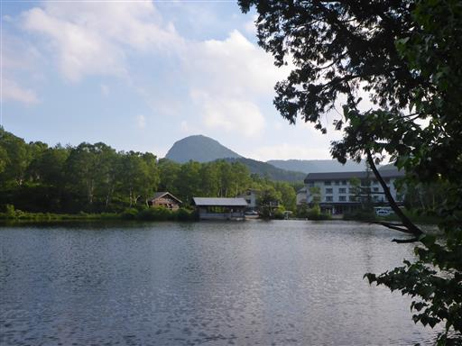
周回コースの最後は笹の道。
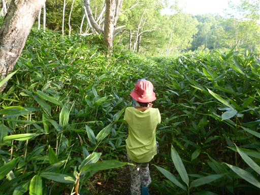
笹の葉に一列の穴が開いている。
他にも同じような葉が見られたが、原因は何なのだろう？
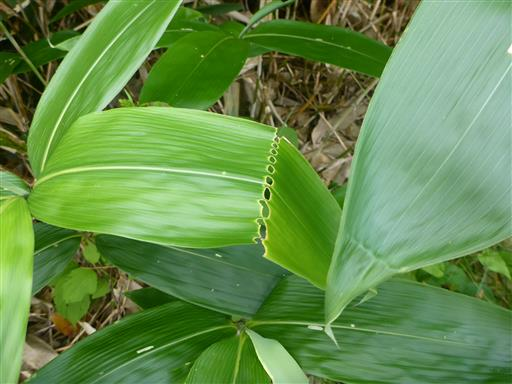
ヤナギランの先にトンボが止まっている。
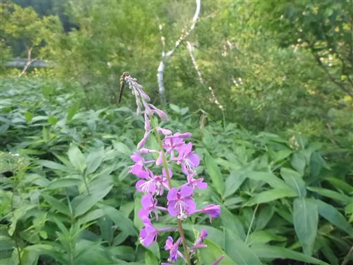
木戸池で遊んだらキャンプ場に戻る。
日曜になり、さらにテントの数が増えている。
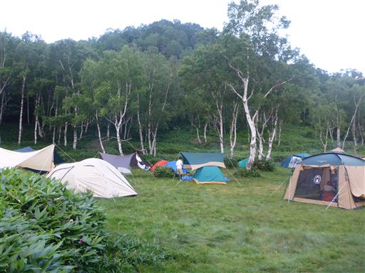
子供達は夕方も熱心にバッタ捕り。
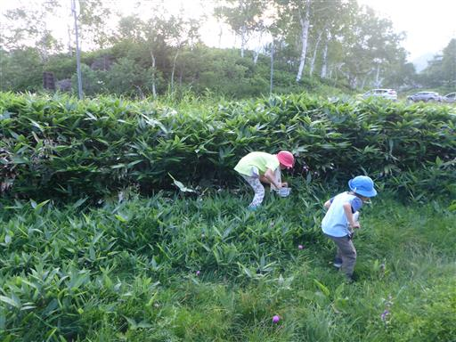
捕まえたバッタを虫かごに入れる。
ふと虫かごを見ると、黒いバッタが他のバッタを捕食していて、娘は大パニック。
調べたところ恐らくヒメギスだろう。肉食とは思わなかった。
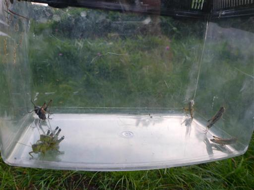
日が暮れる。昨日に引き続き本日も雷雨が無くて良かった。
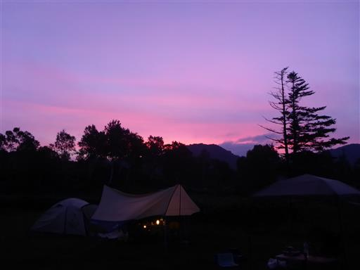